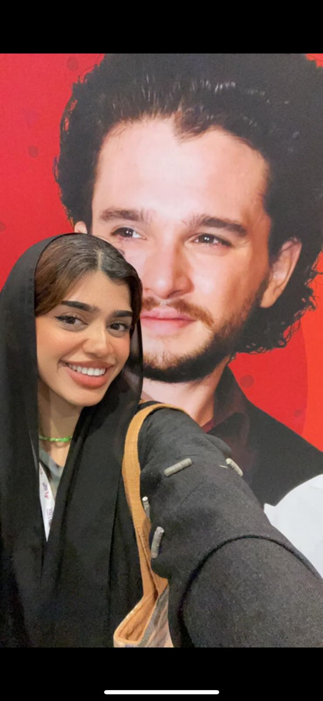

Sandi Hilal
My name is Sandi Hilal, I was 14 when I gained
my first glimpse of joy and resilience in learning during the First Intifada in Palestine, when
schools and universities were shut down, and a series of curfews were imposed by the Israeli
military occupation on cities, villages, and refugee camps. In my community, as in other communities
in Palestine, we insisted that schooling must continue and that all uncultivated land in the
neighborhood must be planted to ensure that our daily needs would be met. Within a few days, a
neighborhood school was formed. Every member of the community made their garages and living rooms
available, transforming them into classrooms where mothers, fathers, sisters, brothers, aunts,
uncles, and grandparents became teachers in their own houses. I studied at the neighborhood school
for a long time, participating in the planting of fruit and vegetables and patiently waiting, like
everyone else, for harvest season.
Nathan Jacob
Hi, Nathan here - a Freshman at NYUAD. I am from
Kerala, the south of India,
but was born and raised in the U.A.E. If I were to breakdown my identity I would say that I am a
Chrisitan, close to my family, loyal to my friends, and love football (come on you Gunners).
Rose Chen
Nihao, my name is Rose from China. I am a junior
at NYUAD double majoring in
Social Research and Public Policy and Music Study. In my spare time, I like to listen to live jazz,
go to the opera or the musical. These are the best outlets for me to vent all kinds of stress in my
life.
Diana Alibekova
Salem, I am Diana, a daughter of Kazakhs,
born on the endless steppes of nomads.
Being interested in film and drawings, surprisingly majored in law and stats.
Ehtisham Ul Haq
Hi, I am Ehtisham. I am studying Computer
Science and Interactive Media at NYU Abu Dhabi. I am passionate about art and media as a powerful tool for social and political
change. I love playing and making story-based video games. And I also love traveling and exploring new places (especially mountains)!
Alya AlKhemeiri
Hello! I’m Alya, a film major. I love to travel,
cook, and express myself
through different forms of art. If I could describe myself I would say open minded, free spirited,
and control freak, but I’m working on it.

Fatma Arif Albastaki
Hello everyone! My name is Fatma Albastaki and
I’m a senior at NYUAD studying
Mathematics. I am from Dubai originally, but I live on campus and call both Dubai and Abu Dhabi
home. I hope to pursue a career in investment banking and have some work experience abroad after
graduation. My interests include travel, weightlifting, and football :)
Yasmin Alshurafa
Hello Everyone! I am Yasmin, an Emirati
undergraduate student at NYUAD. I am
currently a senior pursuing a major in Interactive Media with double minors in Visual Arts and
Design. The art world has always been interesting to me; everything art and technology related grabs
my attention. I love having a cup of coffee alone in the morning and a piece of dessert with my
loved ones at night.

Dilnaz Amantayeva
Hi everyone! My name is Dilnaz, I call
Kazakhstan my home and I’m a student at NYU Abu Dhabi studying Economics and Interactive Media
because of my interest in the intersection of finance and technology :) In my free time, I love
journaling, when I take time to reflect on my actions, decisions and plans, as well as making videos
and photography (both film and digital).
Nadia Chan
Hey everyone! My name is Nadia and I’m a
freshman from Malaysia, majoring in
Econ. I’m a Pisces, East Asian (so I love eating fish), and did (synchronized) swimming for quite a
few years, so I guess you could say it’s almost like I have a fish on my face.
Cadence Cheah
Hi! I’m Cadence. I enjoy learning and expressing
myself through different
forms of art-making from poetry to theater; and I’m a true liberal arts student with three minors
lol. Also, as a proud tropical kid, I struggle with borderline hypothermia at 18 degrees.
Ahmad Harmoozi
Hey everyone, I’m Ahmad! I’m an Emirati freshman
at NYUAD and am majoring in
Economics. I enjoy spending quality time with my family and friends. I also love to travel around
the world and explore different cultures. Additionally, I like playing tennis, padel, football, and
basketball. (Man City and Celtics fan of course!)
Kotryna Karpauskaite
Hi, my name is Kotryna and I’m a sophomore from
Lithuania. I’m studying
Economics and Environmental Studies at NYUAD. I enjoy learning new languages, travelling, as well as
photography and literature. I also love being outdoors - during the summer, you can find me either
camping, kayaking or walking my dog.
Himanshi Lalwani
Hi! I am Himanshi. I am a junior studying
Computer Science. I was born and
raised in Indore, India. In my free time, you would find me reading a book, watching reels, or
taking long walks around the highline with my friends.

Bedan Maiywa
Hello everyone! My name is Bedan and I am a
freshman at NYUAD still undecided
between Computer Science and Mathematics. I am from Kenya in East Africa and now stationed at Abu
Dhabi, UAE. My interests include politics, playing video games, cheering for my favorite club
Chelsea and watching Documentaries.
Kartikey Singhal
Hello! I am Kartikey, a senior trying to study
computer science and
mathematics at NYUAD. I can often be found aggressively discussing a football game in my room. If in
a bad mood, visit me to hear one of my “amazing”(citation needed) jokes. I can talk for hours on pop
culture, sports and weird facts. Feel free to talk to me about Manchester United, the cringiest
bollywood movies, obscure music genres, the wonderful math and the abysmal CS dept.
Ibad Hasan
Hi, I’m Ibad. I am double majoring in Film and
New Media and Literature and
Creative Writing. Academically, I am interested in postcolonial literature and media, exploring
film’s potential to excavate stories about marginalized identities. I also love traveling and taking
pictures of everything, from my friends in bed to Abu Dhabi’s beautiful soaring skyline.